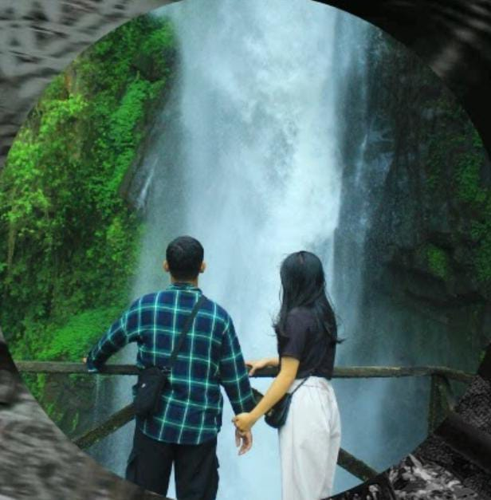
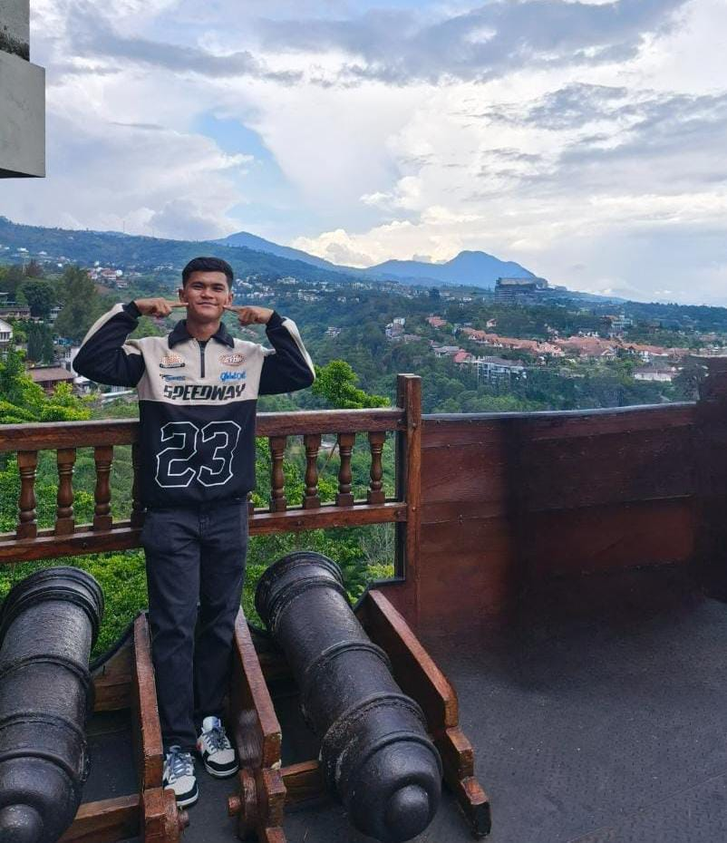

🎀 26 Desember 2025 🎂
tiup lilinnya ✨
26 Desember 2004 - 26 Desember 2025
DEAR JONATHAN ZEBUA🤍
Klik tombol di bawah ini
Menu Spesial 🌹
Pilih menu untuk melihat pesan spesial dari Titin 😃!
🎂 Selamat Ulang Tahun Sayang!
"Nggak terasa udah nambah usia aja, padahal perasaan kemarin kita baru merayain pakai lilin pulang dari perayaan natal, biarpun ngerayainnya hanya di layar Hp karna jarak yang memisahkan kita🤭, namun tetap bersyukur kok 🤗. Makasih ya udah jadi orang yang selalu ada buat ku, yang nggak pernah skip dengerin drama ku,dan yang paling jago bikin ketawa kalau lagi bad mood.kadang juga buat kesal sih 😅. SEKALI LAGI SELAMAT ULANG TAHUN YAHHHH...."
Tentang Mu 💝
"Hari ini adalah hari tentang mu. Dimana 21 Tahun yang lalu, pada tanggal 26 Desember 2004, Tuhan telah memepercayakan dirimu untuk terlahir di dunia ini. Bertemu banyak hal yang menjadi pembelajaran, termasuk juga bertemu dengan ku tanpa ada kesengajaan sehingga memilihku untuk menjadi penyemangat. diantara jutaan pembelajaran hidup yang sudah kamu lalui, baik susah maupun senang, bertemu dengan ku juga termasuk salah satu pembelajaran yang diberikan Tuhan untuk mu, dimana kesabaran mu di uji. Semoga sabar mu seluas samudera, dan kasih mu sedalam lautan 🌷💫".
💖 Doa Terbaik
"Semoga dihari yang penuh rasa syukur ini dan seterusnya, dirimu selalu diliputi oleh kedamaian dan kebahagiaan dari Bapa disorga. Semoga Tuhan menjaga hati dan langkahmu, menjauhkanmu dari segala kesulitan, dan mempermudah jalanmu menuju impian. aku berharap Bapa senantiasa memberi kekuatan untuk menjadi pribadi yang lebih sabar, lebih ikhlas, dan lebih bermanfaat. Semoga dirimu selalu berada di jalan kebaikan, dimudahkan dalam mencari rezeki, dan dapat membahagiakan orang-orang disekitarmu 🤗"
🌟 Ayat Emas 🌟
"Umur panjang ada di tangan kanannya, di tangan kirinya kekayaan dan kehormatan"
— Amsal 3:16 ✨
"Kiranya diberikan-Nya kepadamu apa yang kaukehendaki dan dijadikan-Nya berhasil apa yang kaurancangkan"
— Mazmur 20:25 ✨
🎁 Kejutan !...

Klik tombol di bawah untuk membuka pesan istimewa Dari Titin 🤭